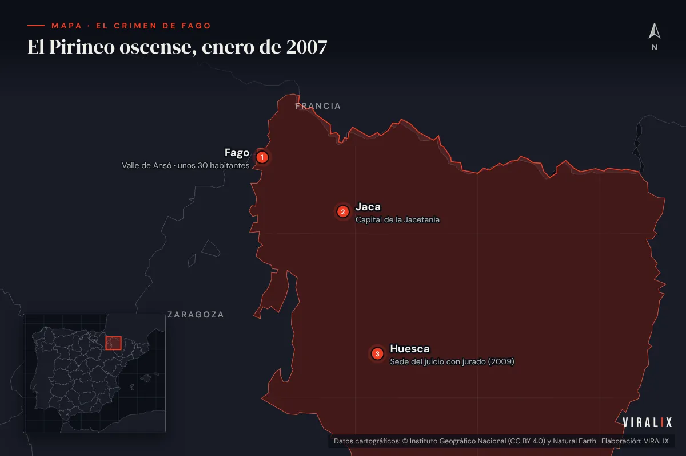
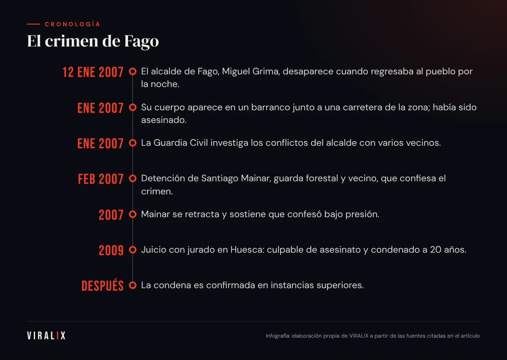
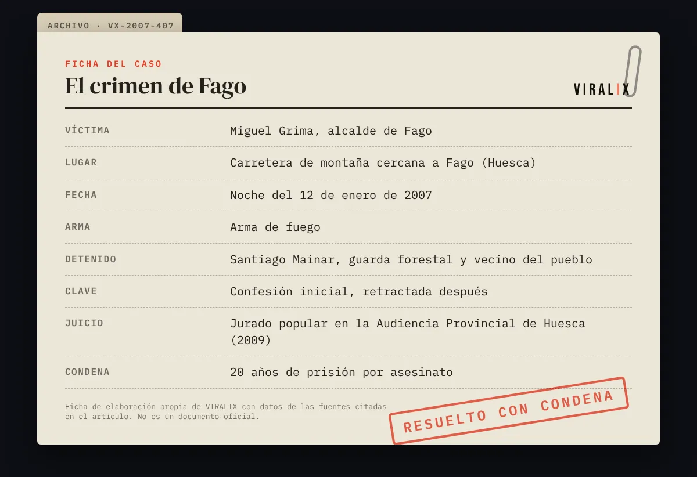

En el valle de Ansó, en el Pirineo occidental de Huesca, hay pueblos donde todo el mundo se conoce desde siempre. Fago es uno de ellos: unas pocas casas de piedra, una iglesia, carreteras de montaña y apenas una treintena de vecinos censados a comienzos de este siglo. Un lugar donde, en teoría, no pasa nada.
La noche del 12 de enero de 2007, el alcalde de Fago, Miguel Grima, no llegó a casa. Días después su cuerpo apareció en un barranco junto a una carretera de la zona. Había sido asesinado con un arma de fuego. El crimen, que conmocionó a España, sacó a la luz algo que en el valle todos sabían: Fago llevaba años dividido por una guerra vecinal que nadie había sabido apagar.
Un pueblo pequeño, un conflicto enorme
Miguel Grima llevaba varios años como alcalde. Su gestión había generado enfrentamientos constantes con parte del vecindario: disputas por licencias, terrenos, obras, denuncias cruzadas y procedimientos judiciales. En un pueblo de treinta personas, cada conflicto era necesariamente personal.
Los medios que cubrieron el caso describieron un clima de tensión permanente, con vecinos que no se hablaban, quejas ante distintas administraciones y una convivencia rota. Nada de ello justifica un crimen, pero ayuda a entender por qué la investigación se centró desde el principio en el entorno cercano de la víctima.
La noche del crimen
Según la reconstrucción de la investigación, el alcalde regresaba a Fago en coche por la noche cuando fue interceptado en la carretera. Su desaparición dio la voz de alarma de inmediato: en un lugar tan pequeño, la ausencia de alguien se nota en pocas horas. Se organizó una búsqueda en la que participaron la Guardia Civil, vecinos de los pueblos cercanos y equipos de montaña.
El hallazgo del cuerpo en un barranco, días después, confirmó lo peor. A partir de ese momento, el valle se llenó de agentes, periodistas y unidades de televisión. Fago, que hasta entonces apenas aparecía en los mapas, ocupó durante semanas las portadas de toda la prensa nacional.

La investigación
La Guardia Civil trabajó durante semanas con un número limitado de posibles sospechosos: en un pueblo de treinta habitantes, la lista de personas con conflictos abiertos con el alcalde era conocida por todos. Los investigadores analizaron:
- Las relaciones y disputas de la víctima con distintos vecinos.
- Los movimientos de vehículos por la zona aquella noche.
- Las armas registradas en el entorno.
- Los testimonios de quienes habían visto al alcalde por última vez.
A comienzos de febrero de 2007, los agentes detuvieron a Santiago Mainar, guarda forestal y vecino de Fago, que había mantenido conflictos con el alcalde.
La confesión... y la marcha atrás
El caso dio un giro cuando, tras su detención, Santiago Mainar confesó haber cometido el crimen. La confesión parecía cerrar la investigación. Sin embargo, poco después se retractó: aseguró que había confesado bajo presión y que era inocente.
A partir de ese momento, el proceso giró en torno a una pregunta jurídica de gran calado: ¿qué valor tiene una confesión cuando el acusado se retracta?
El juicio con jurado
El juicio se celebró en 2009 en la Audiencia Provincial de Huesca, ante un jurado popular. La defensa sostuvo la inocencia de Mainar, cuestionó la forma en que se había obtenido la confesión y señaló posibles lagunas en la investigación. La acusación presentó la confesión inicial junto con otros indicios que, a su juicio, la corroboraban.
El jurado declaró a Santiago Mainar culpable de asesinato y fue condenado a 20 años de prisión. La sentencia fue recurrida y, según informaron los medios, confirmada después por los tribunales superiores.
En un pueblo de treinta vecinos no hay desconocidos. Por eso el crimen de Fago no fue solo un asesinato: fue la explosión de un conflicto que todos veían venir.
— VIRALIX
- 12 ene 2007El alcalde de Fago, Miguel Grima, desaparece cuando regresaba al pueblo por la noche.
- Ene 2007Su cuerpo aparece en un barranco junto a una carretera de la zona; había sido asesinado.
- Ene 2007La Guardia Civil investiga los conflictos del alcalde con varios vecinos.
- Feb 2007Detención de Santiago Mainar, guarda forestal y vecino, que confiesa el crimen.
- 2007Mainar se retracta y sostiene que confesó bajo presión.
- 2009Juicio con jurado en Huesca: culpable de asesinato y condenado a 20 años.
- DespuésLa condena es confirmada en instancias superiores.

Las dudas que persisten
Pese a la condena firme, el caso de Fago ha seguido generando debate, sobre todo por el peso que tuvo la confesión retractada. Quienes defienden la inocencia de Mainar sostienen que no se encontraron pruebas materiales concluyentes; quienes respaldan la sentencia recuerdan que el jurado valoró el conjunto de indicios y que los tribunales superiores la confirmaron.
En VIRALIX nos atenemos a lo que establecen las resoluciones judiciales: Santiago Mainar fue condenado por el asesinato de Miguel Grima. Al mismo tiempo, recogemos que el caso se ha utilizado en el ámbito jurídico como ejemplo de las dificultades que plantean las confesiones que luego se retiran.
Fago después del crimen
El asesinato dejó una herida profunda en un pueblo minúsculo. Algunos vecinos se marcharon; otros permanecieron con la sensación de que el foco mediático había convertido su vida cotidiana en espectáculo. Durante meses, Fago fue sinónimo de «pueblo maldito» en titulares y tertulias, una etiqueta injusta para quienes no tenían nada que ver con el crimen.
Lo que enseña el caso
- Los conflictos vecinales enquistados pueden escalar si no existen mecanismos de mediación eficaces, especialmente en comunidades muy pequeñas.
- La confesión no es la «reina de las pruebas»: el sistema judicial exige corroborarla y garantizar que se obtuvo con todas las garantías.
- La despoblación rural convierte a los ayuntamientos pequeños en espacios donde lo institucional y lo personal se confunden con facilidad.
- El tratamiento mediático de los pueblos pequeños puede estigmatizar a toda una comunidad por los actos de una persona.
El crimen de Fago sigue siendo, casi dos décadas después, uno de los casos más estudiados de la crónica negra española reciente. No por su violencia, sino por todo lo que reveló sobre la convivencia, la justicia y la España rural.

Preguntas frecuentes
¿Quién fue condenado por el crimen de Fago?
Santiago Mainar, guarda forestal y vecino del pueblo, fue declarado culpable por un jurado popular en la Audiencia Provincial de Huesca y condenado a 20 años de prisión por el asesinato del alcalde Miguel Grima.
¿Por qué se habla tanto de su confesión?
Porque Mainar confesó tras su detención y después se retractó, alegando que lo había hecho bajo presión. El caso se cita a menudo en debates jurídicos sobre el valor de las confesiones y la necesidad de corroborarlas con otras pruebas.
¿Dónde está Fago?
En el valle de Ansó, en la comarca de la Jacetania (Huesca), en el Pirineo occidental aragonés, cerca del límite con Navarra y de la frontera francesa. Es uno de los municipios menos poblados de Aragón.
¿Qué relación tenía el crimen con los conflictos del pueblo?
La investigación y el juicio pusieron de relieve años de enfrentamientos entre el alcalde y parte del vecindario. Esos conflictos no explican por sí solos el crimen, pero formaron parte del contexto que analizaron investigadores y tribunal.
¿Hubo otros sospechosos?
En las primeras semanas la Guardia Civil analizó el entorno de todas las personas con disputas abiertas con el alcalde, algo inevitable en un pueblo tan pequeño. Ninguna otra persona fue acusada formalmente.
¿Qué cambió en Fago después del crimen?
El pueblo quedó marcado durante años por la atención mediática y por la división entre vecinos. Algunos se marcharon y otros permanecieron intentando recuperar la normalidad. El ayuntamiento tuvo que reorganizarse tras la muerte del alcalde y, con el tiempo, el caso pasó a formar parte de la memoria de todo el valle de Ansó, que reivindica ser conocido por su paisaje y su cultura pirenaica y no solo por el crimen.
Fuentes y bibliografía
- Archivo de El País: cobertura del crimen de Fago y del juicio (2007-2009). elpais.com
- Archivo del Heraldo de Aragón: información sobre la investigación y el proceso judicial. heraldo.es
- Centro de Documentación Judicial (CENDOJ), Consejo General del Poder Judicial: buscador de resoluciones judiciales. poderjudicial.es
- Ley Orgánica 5/1995, de 22 de mayo, del Tribunal del Jurado. boe.es
- «Crimen de Fago», Wikipedia en español (punto de partida contrastado con las fuentes anteriores). es.wikipedia.org
Última revisión: .